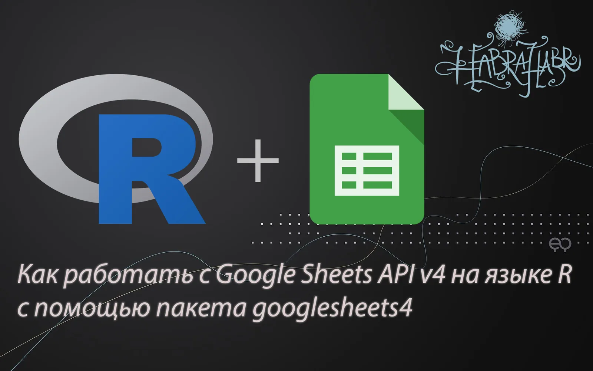
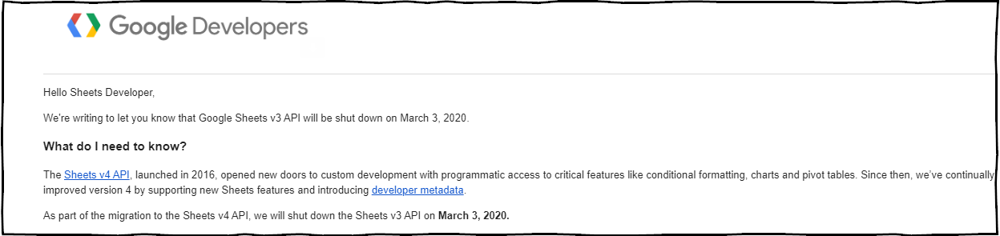
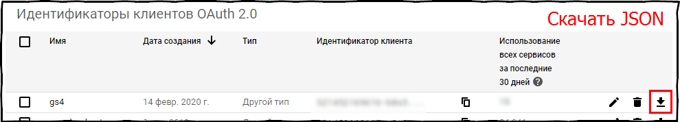
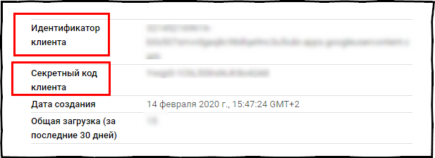
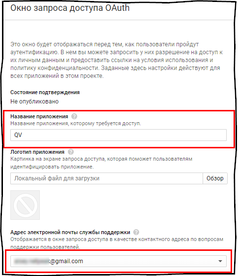
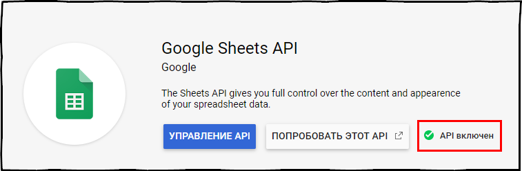
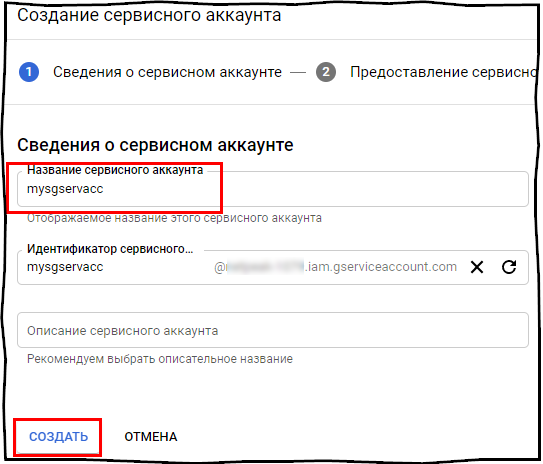
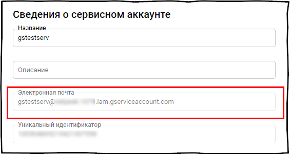

Как работать с API Google Таблиц (Google Sheets API v4) на языке R с помощью нового пакета googlesheets4
Электронные таблицы по-прежнему остаются довольно популярным инструментом для работы с данными, а среди различных процессоров электронных таблиц наиболее популярными являются Google Таблицы. Во-первых, это бесплатный инструмент, во-вторых, функционал Google Таблиц достаточно широк, и они предоставляют вам возможность в онлайн режиме получить доступ к данным.
В этой статье мы разберёмся с тем, как на языке программирования R работать с Google Sheets API v4 с помощью пакета googlesheets4, а точнее:
- Как пройти авторизацию для работы с Google Таблицами по API;
- Рассмотрим основные функции пакета;
- Разберём примеры кода для чтения данных, создания новых таблиц и выполнения других манипуляций с Google Таблицами по API.
Также эта статья поможет пользователям устаревшего пакета googlesheets мигрировать на новый googlesheets4.
Для тех кому лень читать статью, вот ссылка на 10 минутный, русскоязычный видео урок на YouTube. Остальным добро пожаловать под кат.

Изначально статья была опубликована на Хабре
Содержание
Если вы интересуетесь анализом данных, и в частности языком R, возможно вам будут интересны мои telegram и youtube каналы. Большая часть контента которых посвящена языку R.
- Зачем переходить на работу с пакетом googlesheet4
- Миграция с googlesheets на googlesheets4
- Установка пакета googlesheets4
- Авторизация
4.1. Авторизация со стандартными параметрами
4.2. Авторизация через собственное приложение
4.3. Авторизация через сервисный аккаунт
4.4. Разница между авторизацией через приложение и через сервисный аккаунт - Основные функции пакета googlesheets4
- Пример работы с API Google Таблиц на языке R
6.1. Загрузка данных из существующих Google Таблиц
6.2. Создание Google Таблиц с помощью API
6.3. Создание нового листа в Google Таблице
6.4. Дописываем строки в существующий лист
6.5. Перемещение Google Таблиц между папками Google Диска - Полезные ссылки по теме статьи
- Заключение
Зачем переходить на работу с пакетом googlesheet4
Если вы уже являетесь активным пользователем языка R, и на практике вам встречались задачи по работе с Google Sheets API наверняка вы уже знакомы с пакетом googlesheet. И вполне резонно, что первый вопрос который возник у вас в голове — “А чем же googlesheets4 лучше?”.
На самом деле по функционалу они похожи, возможно даже googlesheets пока имеет больше возможностей, но он работает только с Google Sheets API V3. Google несколько месяцев назад сообщил, что поддержка 3 версии данного API будет прекращена 3 марта 2020 года.

Именно поэтому, даже если вас вполне устраивает пакет googlesheets, вам в любом случае до 3 марта необходимо мигрировать на googlesheets4, надеюсь данная статья вам в этом поможет.
Миграция с googlesheets на googlesheets4
Что бы максимально упростить миграцию с устаревшего пакета googlesheets на новый googlesheets4 я решил добавить таблицу соответвия новых функций старым.
| googlesheets | googlesheets4 | Краткое описание |
|---|---|---|
gs_auth() |
gs4_auth() |
авторизация |
gs_key(), gs_url() |
as_sheets_id() |
подключение к таблице |
gs_read() |
range_read() |
чтение данных |
gs_new() |
gs4_create() |
создание таблицы |
gs_ws_new() |
sheet_add() |
создание нового листа |
gs_add_row() |
sheet_append() |
дописывание новых строк |
Установка пакета googlesheets4
Для работы с API Google Таблиц, как я уже писал выше, мы будем использовать пакет googlesheets4, написанный Дженни Брайан из RStudio.
Установить его можно как из CRAN, так и из GitHub.
Устновка из CRAN:
install.packages('googlesheets4')
Установка из GitHub:
# установка пакета devtools
if ( !require(devtools) ) install.packages("devtools")
# установка пакета googlesheets4
devtools::install_github("tidyverse/googlesheets4")
# подключаем пакет
library(googlesheets4)
Авторизация
В пакете googlesheets4 есть по меньшей мере 3 способа авторизации:
- Использовать стандартные параметры функции
gs4_auth(). - Авторизоваться через собственное приложение.
- Авторизоваться через сервисный аккаунт.
Авторизация со стандартными значениями аргументов
Наиболее простой способ авторизации предоставляет функция gs4_auth() со значением аргументов принятых в ней по умолчанию.
Минус этого подхода заключается в том, что вы будете использовать приложение вшитое в пакет по умолчанию, как и 90% других его пользователей. Каждое приложение имеет квоты на количество отправляемых запросов, поэтому с ростом количества пользователей данного пакета возрастает и шанс выйти за выделенные лимиты.
Поэтому я рекомендую самостоятельно создать приложение в Gogle Cloud, и пройти авторизацию с его помощью.
Авторизация через собственное приложение
Как создать своё приложение?
Для создания приложения следуйте приведённым ниже инструкциям:
- Переходим в Google Cloud Console и создаём там проект, если у вас ещё нет созданного. Также для создания проекта можно воспользоваться ссылкой.
- Переходим в «Основное меню» > «API и сервисы» > «Учетные данные».
- «Создать учетные данные» > «Идентификатор клиента OAuth».
- Вводим любое произвольное название для вашего приложения.
- Далее будет сгенерирован id и secret вашего приложения.
- Теперь вам необходимо либо скачать JSON файл с созданными учётными данными, либо скопировать id и секрет созданного вами приложения.
Скачиваем JSON

Копируем ID и секрет приложения

Если вы впервые создаёте приложение в Google Console, то также вам предварительно понадобиться создать “Окно запроса доступа OAuth”, просто заполните в нём название и ваш email, насколько я помню больше там никаких обязательных полей нет.

Последний шаг, включаем Google Sheets API, для этого достаточно перейти по этой ссылке и нажать кнопку включить API.

Теперь возвращаемся в RStudio, подключаем пакет и проходим авторизацию через своё приложение.
Проходим авторизацию через JSON файл:
# подключаем пакет
library(googlesheets4)
# указываем путь к JSON файлу, который ранее скачали
gs4_auth_configure(path = "C:/path/to/app_credential.json")
# проходим авторизацию
gs4_auth(email = "your_email@gmail.com")
Проходим авторизацию указав в коде ID и Секрет приложения:
# подключаем пакет
library(googlesheets4)
# указываем путь к JSON файлу, который ранее скачали
httr::oauth_app(appname = "app_name",
key = "00000000-abcdefghk.apps.googleusercontent.com",
secret = "qwertyuiopasdf")
# проходим авторизацию
gs4_auth(email = "your_email@gmail.com")
После запуска функции gs4_auth(), в приведённых выше примерах кода, вы будете перенаправлены в браузер. Там вы подтверждаете разрешение на доступ к данным и возвращаетесь в RStudio для продолжения работы.
Авторизация через сервисный аккаунт
Для начала надо создать сервисный аккаунт, вот алгоритм действий который вам необходимо выполнить:
- Создать проект в Google Cloud, если он ещё не создан.
- Включить Google Sheets API, для этого необходимо перейти по этой ссылке.
- Для создания сервисного аккаунта перейдите по этой ссылке.
- Заполните его название и описание (при необходимости) и нажмите “Создать”.

- Роль устанавливать не надо, поэтому жмём “Продолжить”.
- В следующем окне жмём “Создать ключ” > Тип ключа выбираем JSON > Создать.
- Запоминаем расположение и название JSON файла, при сохранении вы можете дать ему любое название.
- Жмём “Готово”.
Теперь у вас появился сервисный аккаунт, откройте его и скопируйте почту.

При авторизации под сервисным аккаунтам вы можете работать только с теми Google Таблицами к которым вы предоставили доступ для созданного сервисного аккаунта по его почте. Доступ предоставляется также, как и обычному пользователю.
- Открываем Google Таблицу.
- Жмём “Настройка доступа”.
- Открываем доступ на почту созданного сервисного аккаунта.
Проходим авторизацию через сервисный аккаунт:
# подключаем пакет
library(googlesheets4)
# проходим авторизацию через сервисный аккаунт
gs4_auth(path = "C:/path/to/service_credential.json")
При авторизации через сервисный аккаунт вам не понадобится подтверждать доступ к данным через браузер, но ещё раз напомню, что вам надо отдельно расшаривать доступ сервисному аккаунту к каждой Google Таблице, с которой вам необходимо работать по API.
Разница между авторизацией через приложение и через сервисный аккаунт
Основными отличиями между авторизацией через приложение и через серверный аккаунт являются:
- При авторизации через сервисный аккаунт не требуется подтверждать доступ к данным через браузер.
- Сервисный аккаунт имеет доступ только к тем Google таблицам к которым вы сами ему предоставили доступ на почту. При авторизации через приложение вы подтверждаете доступ ко всей доступной вашему Google аккаунту информации.
По этим двум причинам наиболее предпочтительным способом автризации является авторизация через сервисный аккаунт. Но важно понимать, что если кто-то посторонний получит доступ к JSON файлу с ключём от сервисного аккаунта, он автоматически завладеет всеми правами и доступами которые вы предоставили этому сервисному аккаунту.
Основные функции пакета googlesheets4
Все функции пакета googlesheets4 разделены на 3 группы, каждая группа функций имеет свой префикс, который говорит об области действия этой функции:
gs4_— объединяет функции реализующие операции над книгой GoogleSheetssheet_— операции над рабочими листамиrange_— операции над отдельными диапазонами ячеекcell_— операции над отдельными ячейками
Давайте рассмотрим основные функции пакета googlesheets4.
gs4_auth()— Авторизация;gs4_create()— Создаёт новую Google Таблицу;gs4_browse()— Открывает Google Таблицу в браузере;as_sheets_id()— Инициализирует подключение к Google Таблице, в качестве единственного аргумента принимает URL или ключ нужной Google Таблицы;range_read()— Считывает данные из указанного листа Google Таблицы;sheet_write()— Записывает данные в Google Таблицу, при необходимости создаёт новый лист. Если вы пытаетесь записать данные на существующий лист то все данные будут перезаписаны;sheet_append()— Дописывает данные на уже существующий лист;sheet_add()— Создаёт новые листы в существующей Google Таблице;sheet_delete()— Удаляет существующие листы из Google Таблицы;sheet_names()— Выводит вектор содержащий имена листов Google Таблицы.
Пакет содержит также множество вспомогательных функций, но думаю перечисленных выше вам будет более чем достаточно для выполнения любых действий с Google Таблицами.
Пример работы с API Google Таблиц на языке R
Теперь я приведу примеры кода для выполнения основных операций с Google Таблицами.
Для примера нам потребуются какие-нибудь тестовые наборы данных. Что бы не изобретать велосипед мы будем использовать созданную мной Google Таблицу и встроенные в R датасеты iris, mtcars и ToothGrowth.
Загрузка данных из существующих Google Таблиц
Считывание данных из Google Таблицы является наиболее часто используемой операцией.
Алгоритм действий достаточно прост, вам необходимо инициализировать подключение к нужной таблице, и считать данные с существующего в ней листа.
Для подключения вам необходимо воспользоваться функцией as_sheet_id(), в которую следуют передать ключ или URL адрес Google Таблицы.
URL: https://docs.google.com/spreadsheets/d/1hP1OwJuSHfvrTZvZUgEHDwcPPVlDMwPwCqCQPs64OSE/
Ключ: 1hP1OwJuSHfvrTZvZUgEHDwcPPVlDMwPwCqCQPs64OSE
Как вы поняли из приведённого выше примера ключ это часть URL адреса таблицы, которая находится между /d/ и следующие слешем .
Для чтения данных в googlesheets4 предназначена функция range_read().
Пример кода для чтения данных из Google Таблицы
# подключаем пакет
library(googlesheets4)
# проходим авторизацию одним из описанных способов
gs4_auth(email = "your_mail@gmail.com")
# подключаемся к тестовому доксу
my_dox <- as_sheets_id("1hP1OwJuSHfvrTZvZUgEHDwcPPVlDMwPwCqCQPs64OSE")
# считываем данные с листа test_data
data <- range_read(my_dox, sheet = "test_data")
Процесс подключения и чтения данных можно записать более компактно используя пайплайны.
data <- as_sheets_id("1hP1OwJuSHfvrTZvZUgEHDwcPPVlDMwPwCqCQPs64OSE") %>%
range_read("test_data")
Создание Google Таблиц с помощью API
Для создания новой таблицы используйте функцию gs4_create() и следующие её аргументы.
- name — Имя Google Таблицы;
- locale — Региональные настройки;
- timeZone — Часовой пояс;
- sheets — Принимает вектор с именами листов, либо список, название каждого элемента списка будет сконвертировано в имя листа, а в качестве значений вы можете передать дата фреймы которые будут записаны на эти листы.
Пример создания Google Таблицы
# подключаем пакет
library(googlesheets4)
# проходим авторизацию одним из описанных способов
gs4_auth(email = "your_email@gmail.com")
# создаём Google Таблицу
ss <- gs4_create(name = "my_new_dox",
locale = "ru_RU",
sheets = list(mtcars = mtcars,
iris = head(iris)))
# открываем созданную таблицу в браузере
gs4_browse(ss)
Приведённый выше код создаст новую Google Таблицу “my_new_dox”, в которой будут 2 листа: mtcars, iris.
Создание нового листа в Google Таблице
Итак, только что мы создали новую Google Таблицу, и при этом инициировали объект подключения к ней, который назвали ss.
Теперь мы можем проводить с созданной таблицей различные манипуляции, например создать в ней новый лист.
Пример кода для создания нового листа с данными
# создаём новый лист с данными
sheet_write(ToothGrowth, ss,
sheet = "tooth_growth")
Writing to 'my_new_dox'
Writing to sheet "tooth_growth"
Функция sheet_write() имеет 3 основных аргумента:
- data — Дата фрейм с данными которые вы хотите записать на новый лист, или перезаписать данные на существующем листе.
- ss — Объект подключения к Google Таблице, который вы можете получить с помощью функций
as_sheets_id()илиgs4_create(). - sheet — Название листа который будет создан в Google Таблице, или на котором будут перезаписаны данные.
Дописывание строк в существующий лист
Ещё одна достаточно важная операция — добавление данных на уже существующий лист.
Осуществляется эта операция функцией sheet_append(), которая имеет 3, уже знакомых вам аргумента.
- data — Дата фрейм с данными которые вы хотите дописать на существующий лист.
- ss — Объект подключения к Google Таблице, который вы можете получить с помощью функций
as_sheets_id()илиgs4_create(). - sheet — Название листа на который требуется дописать строки.
При создании таблицы my_new_dox мы записали на лист iris только первые 6 строк с данными, давайте допишем оставшиеся.
Пример кода для добавления строк на существующий лист
# дописываем строки на лист iris
sheet_append(data = iris[7:150,], ss,
sheet = "iris")
Writing to 'my_new_dox'
Appending 144 row(s) to 'iris'
Перемещение Google Таблиц между папаками Google Диска
Ещё одна операция которая может вам пригодиться, но в данном случае помимо googlesheets4 вам понадобится пакет googledrive.
Установка googledrive
install.packages("googledrive")
Переместить созданную ранее Google Таблицу можно с помощью функции drive_mv(). Но предварительно необходимо пройти автооризацию с помощью функции drive_auth().
Авторизация в пакете googledrive ничем не отличается от описанной в начале этой статьи, т.к. оба рассматриваемых пакета для авторизации используют вспомогательный пакет gargle. Авторизовавшись с попощью функции drive_auth() вы можете передать полученный токен в пакет googlesheets4 для совместного использования: gs4_auth(token = drive_token()).
Далее открываем на Google Диске нужную папку и копируем её URL или ключ. Если нужная папка ещё не создана её можно создать с помощью функции drive_mkdir().
Для инициализации подключения к папке используем функцию as_id().
Пример кода для перемещения Google Таблицы из одной папки Google Диска в другую
# Подключаем библиотеки
library(googlesheets4)
library(googledrive)
# авторизация
## можно либо дважды пройти авторизацию, отдельно под каждым пакетом
## gs4_auth(email = "your_email@gmail.com")
## drive_auth(email = "your_email@gmail.com")
## либо пройти авторизацию с помощью google drive, и передать полученный токен для дальнейшего использования в google sheets
drive_auth(email = "your_email@gmail.com")
gs4_auth(token = drive_token())
# Инициируем подключение к таблице и папке
## Подключаемся к таблице которую требуется переместить
ss <- as_sheets_id("1BNrYUajVSR3wuGySY0ybXrqH3-Jjq-eIS5_f_a6kt_c")
## Подключаемся к папке в которую надо перенести Google таблицу
folder <- as_id("1x94xChfZwSCPFzHvWqwk6HyF85_ASDFW")
# Либо создаём новую папку
## folder <- drive_mkdir("my_folder")
# Переносим Google Таблицу в нужную директорию
drive_mv(file = ss,
path = folder)
File moved:
* my_new_dox -> my_folder/my_new_dox
Полезные ссылки
В этом разделе приведу несколько полезных ссылок по теме статьи:
- Видео урок на YouTube по работе с пакетом googlesheets4 (русский)
- Официальная документация к пакету googlesheets4 (english)
- Страница пакета на GitHub (english)
- Страница пакета на CRAN (english)
Заключение
Описанных в статье возможностей пакета googlesheets4 достаточно для решения подавляющего большинства задач, в которых необходимо использовать Google Sheets API.
На данный момент googlesheets4 находится в стадии активной разработки. Автор пакета планирует реализовать его функционал в полном объёме к марту 2020 года, в связи с чем в статье возможны корректировки и дополнения по мере изменения или расширения возможностей пакета.
Если вы дочитали до этого параграфа, то наверняка интересуетесь, и скорее всего уже используете язык R в работе. Если это так, то думаю вам будет интересен мой телеграм и youtube каналы, большая часть контента которых посвящена языку R.